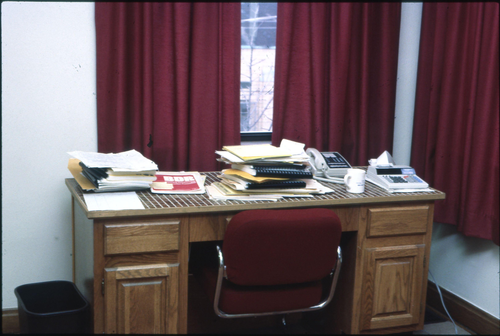
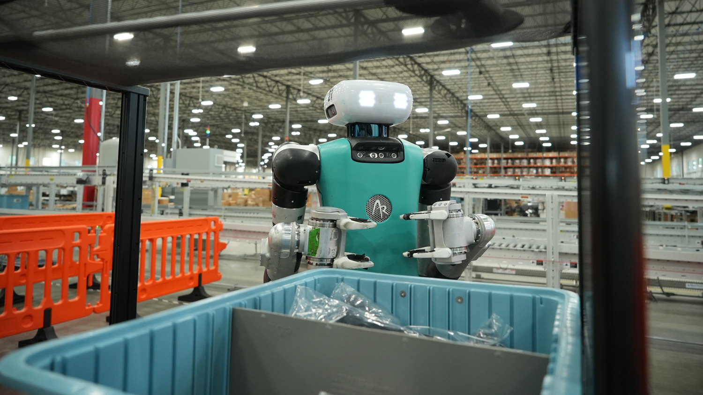
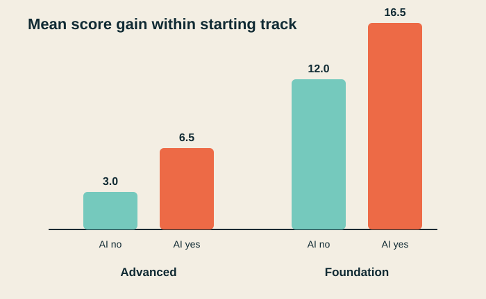

if temperature < 18° → turn heat onA person writes the rule.

The whole story
One idea changes throughout the deck: what happens when predictions are connected to tools and feedback?
Physicist and applied AI systems builder at NYU, focused on document intelligence, research infrastructure, and human–AI workflows.
About the instructor ↗Before AI


But: people still had to specify the mechanism or procedure.
The key change
Instead, we gave the system examples and a way to measure error.
if temperature < 18° → turn heat onA person writes the rule.
temperature + weather + occupancy + history → predicted heating neededThe system learns from past comfort and energy outcomes.
That learned mapping is the core of modern AI. Next, make the definition concrete.
One tiny training set
| Inside | Outside | Soon? | Recent heat | Needed |
|---|---|---|---|---|
| 21°C | 10°C | Yes | 20% | 0% |
| 18°C | 5°C | Yes | 0% | 50% |
| 18°C | −5°C | Yes | 0% | 75% |
| 17°C | −5°C | No | 0% | 40% |
Inputs describe the situation. The target records how much heating was actually needed.
A new situation
[18, −2, 1, 10]
inside · outside · occupied soon · recent heat
Actual: 70% · Error: 5 points
Adjust the weights. Try again.One learned unit: weighted inputs → output. Deep learning: learned weighted operations stacked across many layers.
A practical definition
It might predict, generate, recommend, decide—or choose an action.

The label “AI” does not tell us whether a system is conscious, reliable, fair, or autonomous.
Adapted from the OECD AI-system definition ↗How we arrived here
Next: the mathematics is simpler than the scale suggests.
Linear algebra, made small
The heating model used weights. Now use the same idea to score three clues for the next word.
The cat sat on the _____
[1, 1, 1] · [2, 1, 3] = 6It fits the grammar, familiar phrase, and situation.
This is a teaching model. Real networks learn their own distributed features and repeat operations like this across many layers.
Scale the idea
Break text into chunks.
Turn chunks into vectors.
Mix relevant context.
Choose a likely next token.
The animal didn’t cross the street because it was tired.
“Tired” makes it point toward the animal.The animal didn’t cross the street because it was wide.
“Wide” makes it point toward the street.The surprise: repeating local predictions at huge scale produces useful language behavior.
The Transformer paper · 2017 ↗The ChatGPT moment
Then the next shift: connect the model to search, files, code, browsers, and other tools.
Introducing ChatGPT · 2022 ↗After the cases · what comes next
Example goal“Map the evidence on how heat affects sleep.”
Agent: execution and iteration
Researcher: question, standards, final judgment
Same model, new consequence: its output changes the environment it sees next.
Agent anatomy and human control · 2026 ↗
Real deployment · Digit at GXO · Agility Robotics, 2024 ↗Reality check
Capability shown in controlled conditions.
A task tested at a real job site.
Regular operations, repeated work, measurable output.
This case: Digit unloads totes from mobile robots and places them on a conveyor at a GXO facility.

The same loop · farming
The promise: more yield and resilience with less chemical, water, and repetitive labor.
Signal today: machine vision already targets individual weeds ↗
The same loop · construction
The promise: safer worksites, less waste, and faster adaptation when reality differs from the plan.
Signal today: semi-autonomous construction equipment · 2026 ↗The same loop · science
The promise: more experiments per question—and more time for scientists to interpret surprises.
Signal today: multi-agent hypothesis generation and lab validation · 2026 ↗
The story to remember
learns a mapping from inputs to outputs.
predicts the next token using context and scale.
connects a model to tools, action, and feedback.
depends on goals, permissions, evidence, and who benefits.
The exciting possibility is not fewer people. It is greater human capacity to understand, build, discover, and repair.
Case studies · from capability to practice
What is one task in your work where a plausible but incorrect answer would be dangerous?
A concrete case
The question sounds clear. It is not yet researchable.
Desired resultA one-page evidence map for a research team—not medical advice.
Pair prompt · 45 seconds: Choose one option from each row. Notice how much the question changes.
Before the prompt
The exact population, exposure, outcome, and use.
Which designs and sources count—and why?
Every important claim points to a real source.
Limitations and disagreements remain visible.
A person can decide what the result does—and does not—justify.
The model can help negotiate the brief. It should not silently invent the brief.
The tempting shortcut
Summarize the evidence on how heat affects sleep.A Research proves that warmer nights directly cause sleep loss worldwide.
B Every 1°C increase reduces everyone’s sleep by about seven minutes.
C Older adults and people in lower-income countries appear particularly affected.
D Therefore, keeping every bedroom below 20°C will reliably solve the problem.
Do not fact-check yet. Which words make you uneasy?
Interactive claim audit
Supported, reasonable inference, unsupported—or impossible to determine?
Choose a claim to reveal its evidence judgment.
From prompting to process
Fix the question and deliverable.
Expose search and inclusion choices.
Collect real, accessible sources.
Separate design, sample, and measure.
Use calibrated claim language.
Open sources and check key claims.
Before answering, propose a research plan. Define the population, exposure, outcomes, ambiguities, and inclusion criteria. Create an evidence table with source, design, sample, measure, finding, and limitation. Separate reported findings from your inference. Stop before the final conclusion for human review.
Human gate: approve the question → approve the evidence set → approve the final claim.
Evidence is not interchangeable
765,000 respondents
7M+ records · 47,628 people · 68 countries
18 men · 22°C versus 30°C
Better synthesis: triangulate breadth, measurement, and control—then preserve each study’s limits.
The practical contract
What is one step in your own workflow that you could make more visible and verifiable?
From one case to four small systems
Each lab adds one capability—and one new place to be wrong.
Can we compare messy records?
Can we keep claims attached to sources?
Can an agent choose a safe next step?
Can we preserve what was actually said?
Case 01 · Structured extraction
populationmethodsample_sizefindinglimitationevidence_quoteQuestion: Can the system preserve missingness and uncertainty—not merely produce valid JSON?
The interface is part of the reasoning
Who or what was studied?
What design produced the claim?
Missing is a valid value.
What did the record report?
What constrains interpretation?
What exact text supports the finding?
Student activity · 12 minutes
python 01_structured_extraction/lab.pyMode: offline regex baseline A17: 5/5 fields · quote ✓ B04: 0/5 fields · quote ✗ C22: 0/5 fields · quote ✗ D09: 1/5 fields · quote ✗ Exact field accuracy: 6/20 (30%)
--api.Debrief
Are all fields present and correctly typed?
Do values match the gold record?
Does the quoted text occur in the source?
Did the extraction preserve uncertainty and scope?
Structured output constrains the interface. It does not prove the world inside it.
10-minute break
Keep one example. We will reuse the question.
Case 02 · Grounded Q&A
The corpus says: the evaluation lasted one term and did not measure degree completion.
A transparent RAG pipeline
What exactly is being asked?
Which local files look relevant?
What evidence reaches the model?
What can be said from that packet?
Do filenames and quotes resolve?
Student activity · 17 minutes
Expected: evaluation.txt
Expected: attendance.txt + implementation.txt
Expected: not found
python 02_grounded_qa/lab.pypython 02_grounded_qa/lab.py --api --question "…"In pairs: one person inspects retrieval; the other audits citations and quotes. Switch after question two.
Open Lab 02 instructions ↗Debrief
Verify claims and wording.
Tighten instructions or output checks.
Do not trust the result.
Fix chunking, search, or corpus first.
Citation format is not citation correctness. Open the file.
10-minute break
Return ready to name one action that should require approval.
Case 03 · Tool-using data analyst
The first comparison looks decisive.
Surface difference −2.33 points
Your task: make the agent investigate before it explains.
What makes this agentic?
“Did AI use improve outcomes?”
compare_outcomes
Fixed code reads the CSV.
The loop continues or answers.
describe_datasetinspect_missing_datacompare_outcomesfit_adjusted_modelmake_plotrun arbitrary codesend emailchange the datasetStudent activity · 20 minutes
python 03_data_agent/lab.pypython 03_data_agent/lab.py --apiDid it inspect rows, groups, and design?
Did it notice two absent attendance values?
Did it reproduce −2.33?
Did it compare within starting track?
Did it use the predefined model cautiously?
Did it avoid causal language?
Failure injection: remove “check for a misleading aggregate” from the question. Does the agent still stratify?
Open Lab 03 instructions ↗Debrief · Simpson's paradox

AI-user difference within track
AI-user difference within track
AI use is concentrated in the Advanced track, where gains are smaller for everyone.
The agent found structure. It did not discover causality.
10-minute break
Name one tool it may call, one it must preview, and one it must never receive.
Case 04 · Voice research copilot
Question: Can a spoken interview become a useful memo without losing the transcript, uncertainty, or participant's words?
Recorded voice workflow
Purpose, storage, access.
Accents, noise, speakers.
Names, numbers, negation.
Themes, actions, tensions.
Correct before use.
Upload once, transcribe, then analyze. This lab.
Stream audio and partial transcripts with lower latency. Extension.
Collect only what you are authorized to process.
Student activity · 14 minutes
python 04_voice_copilot/lab.pypython 04_voice_copilot/lab.py --apipython 04_voice_copilot/lab.py --api --audio /path/file.m4aDebrief
Later fluency cannot repair an earlier corrupted record.
What you can take with you
One input type. One schema. A gold set.
One source collection. An absent-answer test.
One tool allowlist. A visible trace.
One consented workflow. A transcript review.
Write one input, one output, one failure test, and one human approval for a workflow in your field.
Return to the complete lab kit ↗